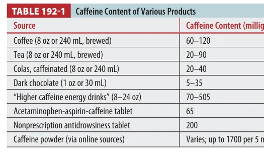
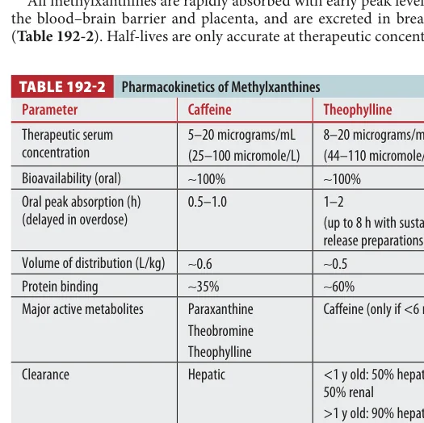
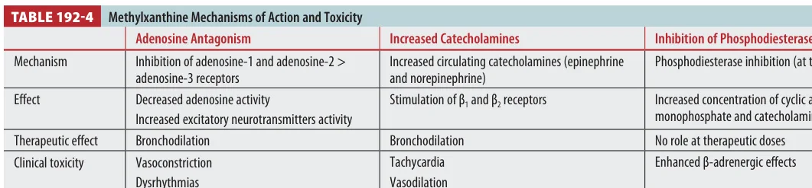
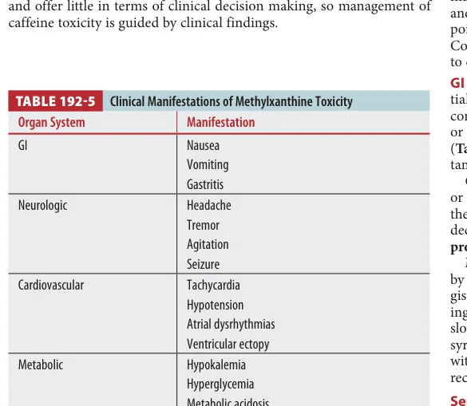
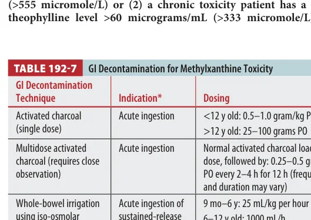
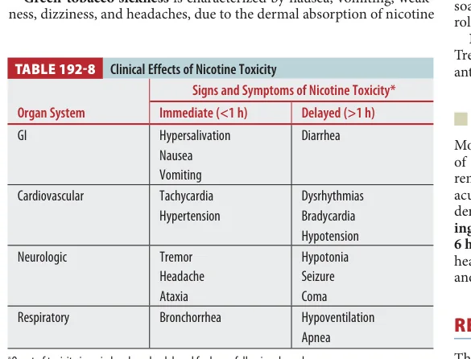
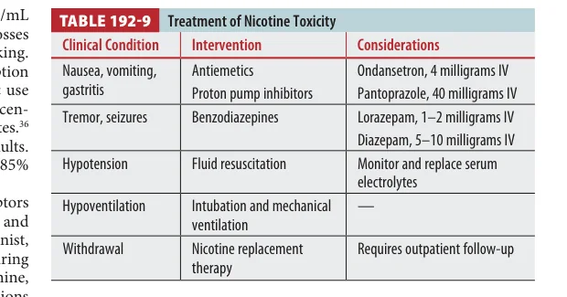

Ch.192 Methylxanthines & Nicotine - EM Board Review
Toxicology Chapter 192
Methylxanthines and Nicotine
This chapter is a stimulant-tox chapter with two personalities: methylxanthines cause catecholamine-driven GI, neuro, cardiac, and metabolic toxicity; nicotine starts cholinergic/nicotinic and can flip into receptor inactivation with bradycardia, hypoventilation, and coma.
Board lens: theophylline is the dangerous methylxanthine. Think refractory seizures, hypokalemia, tachydysrhythmias, multidose charcoal, and hemodialysis.
Overview
MethylxanthinesCaffeine, theophylline, theobromine, pentoxifylline. Theophylline has the highest severe toxicity risk.
NicotineTobacco, e-cigarette liquid, gum, patches, pesticides, and plant exposures. Children are often exposed via cigarettes or e-liquid.
Shared hazardBoth can cause vomiting, tachycardia, seizures, hypotension, and severe toxicity after large exposures.
Methylxanthines: Caffeine and Theophylline
Tintinalli Source Check
Caffeine sources vary wildly. Powder/liquid concentrate exposure can be far more dangerous than coffee.

Tintinalli Table 192-1. Caffeine content of various products.
Tintinalli Source Check
Theophylline kinetics are why chronic users can crash with small dose changes.

Tintinalli Table 192-2. Pharmacokinetics of methylxanthines.
Tintinalli Source Check
Theophylline clearance changes with medications, illness, age, smoking, and hepatic function.
Kinetic trap: methylxanthines show Michaelis-Menten kinetics at high concentrations. Elimination changes from first-order to zero-order, so half-life predictions become unreliable after overdose.
Methylxanthine Toxicity
Mechanism

Tintinalli Table 192-4. Methylxanthine mechanisms of action and toxicity.
Clinical Manifestations

Tintinalli Table 192-5. Clinical manifestations of methylxanthine toxicity.
GINausea and vomiting are common and can be severe.
NeurologicHeadache, tremor, agitation, seizures. Theophylline seizures can be severe and refractory.
Caffeine levels are rarely available and usually do not guide management. Severe caffeine toxicity is a clinical diagnosis; ingestions around 100-150 mg/kg or serum levels above 100 mcg/mL are associated with life-threatening toxicity, and more than 200 mg/kg can be lethal.
Theophylline levels matter more. Acute overdose peak concentrations may be delayed, especially sustained-release. In chronic toxicity, serum level correlates poorly with severity because tissue burden and comorbidities dominate.
Labs to trend: ECG, electrolytes especially potassium, glucose, creatinine, lactate/acid-base status, CK if agitation/seizure/hyperthermia, and serial theophylline levels when relevant.
Methylxanthine Treatment
GI Decontamination

Tintinalli Table 192-7. GI decontamination for methylxanthine toxicity.
VomitingOndansetron is preferred; avoid phenothiazines and cimetidine in theophylline toxicity.
SeizuresBenzodiazepines first. If refractory, phenobarbital. Phenytoin is not useful.
CardiacFluids for hypotension. Esmolol/metoprolol for SVT or atrial fibrillation when appropriate.
CharcoalMultidose activated charcoal for toxic/potentially toxic theophylline ingestions.
HemodialysisEffective for theophylline and massive caffeine/pentoxifylline toxicity.
PotassiumHypokalemia often reflects intracellular shift; replace carefully and monitor for rebound.
Nicotine
Nicotine stimulates nicotinic acetylcholine receptors early, then persistent depolarization can inactivate receptors. Early toxicity includes tremor, dizziness, tachycardia, hypertension, vomiting, and bronchorrhea. Delayed severe toxicity includes bradycardia, dysrhythmias, hypotension, hypoventilation, seizure, and coma.
Clinical Effects

Tintinalli Table 192-8. Clinical effects of nicotine toxicity.
Treatment

Tintinalli Table 192-9. Treatment of nicotine toxicity.
Pediatric clue: a child who ingests one intact cigarette or three cigarette butts has a high chance of symptoms, usually within 30 minutes.
Dermal patch and pesticide exposures can be severe. Remove contaminated clothing and wash skin with soap and water after dermal exposure. Green-tobacco sickness is dermal nicotine absorption during harvesting, causing nausea, vomiting, weakness, dizziness, and headache.
Drug Dose Reference
Intervention
Adult dose
Pediatric dose
Use
Activated charcoal
25-50 g PO/NG once
0.5-1 g/kg PO/NG
Early methylxanthine ingestion with protected airway.
Multidose activated charcoal
Initial 25-50 g, then 25 g q2-4h
0.25-0.5 g/kg q2-4h
Toxic/potentially toxic theophylline ingestion; poison center guidance.
Lorazepam
2-4 mg IV; repeat/escalate
0.1 mg/kg IV, max 4 mg
Methylxanthine or nicotine seizures.
Phenobarbital
10-20 mg/kg IV
10-20 mg/kg IV
Refractory methylxanthine seizures after benzodiazepines.
Esmolol
25-50 mcg/kg/min IV, titrate
Specialist-guided
Symptomatic methylxanthine SVT/AF with toxicology/cardiology guidance.
Ondansetron
4 mg IV/ODT
0.15 mg/kg IV/PO, max 4 mg
Vomiting from methylxanthines or nicotine.
Hemodialysis
Consult toxicology/nephrology
Consult toxicology/nephrology
Severe theophylline, massive caffeine, pentoxifylline toxicity.
Disposition
MethylxanthinesAsymptomatic with normal exam/vitals and normal or decreasing levels can be non-toxic; immediate-release caffeine/theophylline asymptomatic patients need observation, sustained-release needs longer.
TheophyllineAdmit severe symptoms, high/rising levels, sustained-release exposure, chronic toxicity, comorbid elderly patients, dysrhythmias, seizures, or need for dialysis.
NicotineAsymptomatic patients with normal vitals after 3 hours can often be discharged; patch ingestion needs at least 6-hour observation.
PsychIntentional exposure requires behavioral health evaluation after medical stabilization.
Key Points: Methylxanthines and Nicotine
1. Theophylline is dangerousMore severe than caffeine and theobromine.
2. Seizures are hardBenzos first, phenobarbital next; phenytoin does not help.
3. Hypokalemia is a clueOften catecholamine-driven intracellular shift.